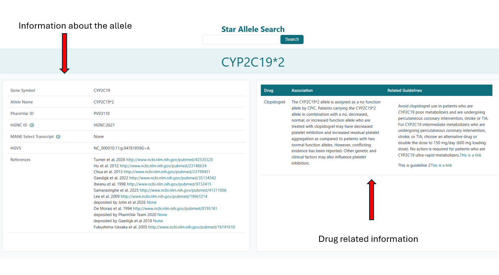

Star-Allele-Search
 Figure 1. Star-Allele-Search homepage
Figure 1. Star-Allele-Search homepage
Welcome to the Star-Allele-Search documentation.
Star-Allele-Search is a pharmacogenomics application designed to retrieve, validate and annotate pharmacogenomic star alleles using information from PharmVar, ClinPGx and CPIC resources. The software provides researchers, clinical scientists and healthcare professionals with a simple interface for exploring pharmacogenomic alleles, associated phenotypes and clinical guidance.
What is a Star Allele?
Many pharmacogenomic genes are described using star allele nomenclature rather than individual sequence variants.
Examples include:
CYP2C19*2
CYP2D6*4
TPMT*3A
SLCO1B1*5
A star allele represents a group of genetic variants that are inherited together as a haplotype and have a known impact on drug response. Star alleles are widely used in pharmacogenomics because they provide a concise and clinically meaningful way to describe pharmacogenetic variation.
For example, CYP2C19*2 is associated with reduced enzyme activity and can influence response to medications such as clopidogrel.
Getting Started
Choose the section that best matches your needs.
Installation
Set up Star-Allele-Search using either:
Search and Annotation
Learn how to search for pharmacogenomic star alleles and interpret the returned annotations.
See the User Guide
Technical Documentation
Explore the software architecture, internal modules and implementation details.
See the Technical Manual
Testing and Quality Assurance
Review automated testing, code coverage and continuous integration workflows.
See Testing
How Star-Allele-Search Works
Star Allele Query
│
▼
PharmVar Retrieval
│
▼
Gene Validation (HGNC + Variant Validator)
│
▼
ClinPGx Annotation Retrieval
│
▼
Guideline Retrieval
│
▼
Structured Results
The software combines information from multiple pharmacogenomic resources to provide a consolidated view of allele definitions, functionality, phenotypes and clinical recommendations.
Example Search
The image below shows an example Star-Allele-Search query.
Figure 1. Example star allele search interface.
The application retrieves information from external pharmacogenomic resources and returns a structured summary.

Figure 2. Example annotated search results returned by Star-Allele-Search.
Supported Resources
PharmVar
The Pharmacogene Variation Consortium (PharmVar) is a centralised repository of pharmacogene variation data and star allele nomenclature. PharmVar provides definitions for core alleles, sub-alleles, functional annotations and stable PharmVar identifiers (PVIDs).
ClinPGx
ClinPGx is a comprehensive resource supporting the clinical implementation of pharmacogenomics and provides information on genes, alleles, phenotypes and guideline annotations.
CPIC
The Clinical Pharmacogenetics Implementation Consortium (CPIC) publishes evidence-based pharmacogenomic prescribing guidelines that help healthcare professionals understand how genetic variation may affect drug response.
Common Use Cases
Clinical Interpretation
Retrieve pharmacogenomic information for clinically relevant genes and alleles to support interpretation of genetic test results.
Research
Explore allele definitions and clinical annotations for pharmacogenomics research and method development.
Validation
Verify allele nomenclature and compare information across multiple pharmacogenomic resources.
Education
Learn about star allele nomenclature, diplotypes and pharmacogenomic phenotypes.
New to Pharmacogenomics?
If you are unfamiliar with pharmacogenomic terminology, the following concepts may be useful:
- Star alleles
- Core alleles
- Sub-alleles
- Diplotypes
- Phenotypes
- Pharmacogenomic prescribing guidelines
The User Guide contains additional examples and background information to help new users understand these concepts.
Acknowledgements
Star-Allele-Search was developed as part of the STP Introduction to Software Engineering project to support the retrieval and interpretation of pharmacogenomic star allele informations.